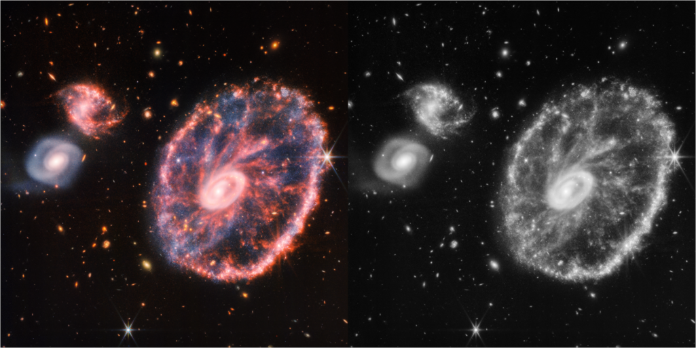
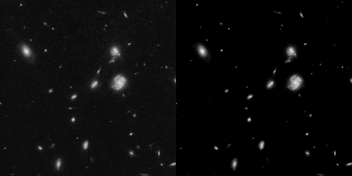
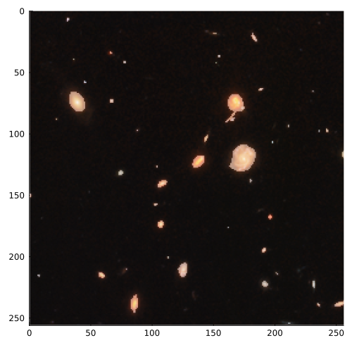
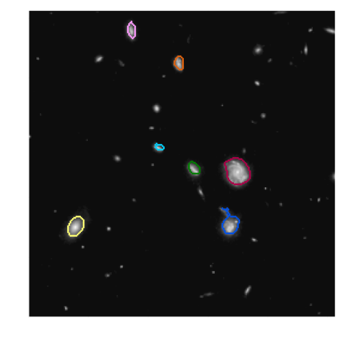
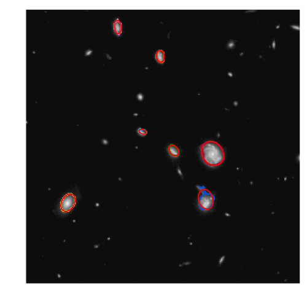
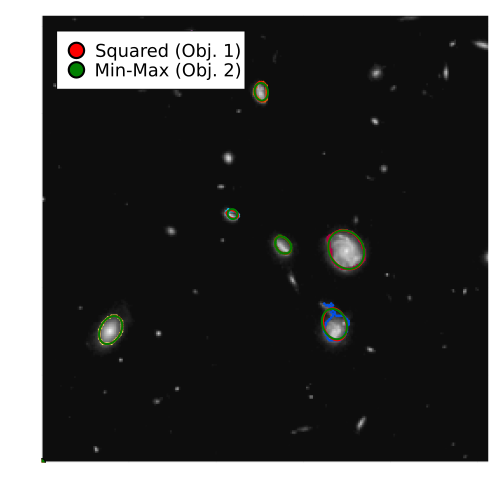

Example: fitting of circles and ellipses
This tutorial was generated using Literate.jl. Download the source as a .jl file.
This tutorial demonstrates how to fit an ellipse to a set of 2D data points using a conic optimization approach. It covers the algebraic ellipse parameterization and applies the method to edge detection in an image.
Learning intentions:
- Represent an ellipse as a quadratic form in homogeneous coordinates and formulate the fitting problem as a semidefinite program
- Fit ellipses under two different criteria—minimise total squared residual and minimise maximum residual—and compare their results visually
- Apply the full pipeline to real image data: denoise, detect edges, cluster detected points, then fit one ellipse per cluster
Required packages
This tutorial uses the following packages:
using JuMPimport Clarabelimport Clusteringimport DSPimport Imagesimport LinearAlgebraimport LinearOperatorCollection as LOCimport Plotsimport RegularizedLeastSquares as RLSimport WaveletsParametrization of an ellipse
An ellipse is a set of the form:
\[\mathcal{E} = \{ \xi : (\xi - c)^\top D (\xi - c) = r^2 \}\]
where $c \in \mathbb{R}^2$ is the center of the ellipse, $D \in \mathbb{R}^{2 \times 2} \succ 0$ is a symmetric positive definite matrix and $r > 0$.
We can setup a coordinate system $(x, y) \in \mathbb{X} \times \mathbb{Y}$ with $x, y \geq 0$. We use definition (1) to write an ellipse as the root of a quadratic form in homogeneous coordinates:
\[\begin{bmatrix} \xi \\ 1 \end{bmatrix}^T \begin{bmatrix} Q & d \\ d^T & e \end{bmatrix} \begin{bmatrix} \xi \\ 1 \end{bmatrix} = 0\]
where:
\[\begin{align} Q &= D\\ d &= -D c\\ e &= c^T D c - r^2 \end{align}\]
The residual distance $r_0$ of a random point $\xi_0 = (x_0, y_0)$ to the ellipse is then given by:
\[r_0 \triangleq \begin{bmatrix} \xi_0 \\ 1 \end{bmatrix}^T \begin{bmatrix} Q & d \\ d^T & e \end{bmatrix} \begin{bmatrix} \xi_0 \\ 1 \end{bmatrix}\]
The value of $r_0$ is positive if the point is outside the ellipse, zero if it is on the ellipse and negative if it is inside the ellipse. We also see we only need six parameters to uniquely define an ellipse.
Helper functions
We define some helper functions to help us visualize the results.
function plot_dwt(x, sz = (500, 500)) return Plots.heatmap( x; color = :grays, aspect_ratio = 1, cbar = false, xlims = (0, size(x, 2)), ylims = (0, size(x, 1)), size = sz, dpi = 300, )endfunction normalize(x::AbstractArray) l, u = extrema(x) return (x .- l) ./ (u - l)endnormalize (generic function with 1 method)Reading the test image
To test our ellipse-fitting algorithm we need a test image with elliptical features. For our test image we will use an image of the cartwheel galaxy, captured by the James Webb Space Telescope. Galaxies come in many shapes and sizes, elliptical being one of them.
This is just a toy problem with little scientific value, but you can imagine how the rotation and position of elliptical galaxies can be useful information to astronomers.
filename = joinpath(@__DIR__, "..", "..", "assets", "cartwheel_galaxy.png")img = Images.load(filename);We convert the image to gray scale so that we can work with a single channel.
img_gray = Images.Gray.(img)Images.mosaicview(img, img_gray; nrow = 1)
Instead of operating on the entire image, we select a region of interest (ROI) which is a subset of $\mathbb{X} \times \mathbb{Y}$.
sz = 256X_c = 600Y_c = 140X = X_c:(X_c+sz-1)Y = Y_c:(Y_c+sz-1)roi = (X, Y)img_roi = img[roi...]img_gray_roi = img_gray[roi...]Images.mosaicview(img_roi, img_gray_roi; nrow = 1)Extracting image features
We cannot directly fit ellipses to the image, so we need to extract features that enable us to find the elliptical galaxies.
The first step is to find a sparse representation of the image. We will use the discrete wavelet transform (DWT) in combination with the Iterative Shrinking and Thresholding (ISTA) algorithm to denoise the image and find a sparse representation. This will remove redundant information and make it much easier to detect the edges of galaxies.
Finding a sparse representation amounts to solving the following optimization problem:
\[\min_{x} \frac{1}{2} \left\| y - \Phi x \right\|_2^2 + \lambda \left\| x \right\|_1\]
where $y$ is the noisy image, $\Phi$ is the sparsifying basis, $x$ is the sparse representation of our image, and $\lambda$ is the regularization parameter which we set to 0.1.
To work with our image we must first convert it to Float64.
x = convert(Array{Float64}, img_gray_roi)256×256 Matrix{Float64}:
0.0823529 0.0588235 0.054902 … 0.0431373 0.0666667 0.054902
0.0784314 0.0588235 0.054902 0.054902 0.0666667 0.0431373
0.0705882 0.0666667 0.0627451 0.0588235 0.0705882 0.0588235
0.0627451 0.0666667 0.0705882 0.054902 0.0627451 0.0627451
0.0509804 0.0666667 0.0745098 0.0509804 0.0509804 0.0588235
0.0509804 0.0627451 0.054902 … 0.054902 0.0588235 0.0588235
0.0588235 0.0784314 0.054902 0.0784314 0.0627451 0.0431373
0.0627451 0.0509804 0.0509804 0.0666667 0.0588235 0.0666667
0.0627451 0.0470588 0.054902 0.0470588 0.054902 0.0901961
0.0588235 0.0509804 0.0470588 0.0470588 0.0470588 0.054902
⋮ ⋱ ⋮
0.054902 0.054902 0.0392157 0.054902 0.0666667 0.0745098
0.0470588 0.054902 0.0509804 0.054902 0.054902 0.0666667
0.0470588 0.0431373 0.0470588 0.0823529 0.0588235 0.0588235
0.0470588 0.0509804 0.0431373 … 0.0784314 0.0588235 0.054902
0.0509804 0.0509804 0.0431373 0.054902 0.0627451 0.054902
0.0431373 0.0470588 0.0431373 0.054902 0.0705882 0.0666667
0.0509804 0.0470588 0.0509804 0.0666667 0.0705882 0.0588235
0.0509804 0.0431373 0.0470588 0.0627451 0.0627451 0.0509804
0.054902 0.0470588 0.0470588 … 0.0823529 0.0705882 0.0666667We then use ISTA in combination with our wavelet sparsifying basis $\Psi$ obtained from the family of Daubechies wavelets. We use the db4 wavelet which has 4 vanishing moments. We set the number of iterations to 15.
reg = RLS.L1Regularization(0.1);Φ = LOC.WaveletOp( Float64; shape = size(x), wt = Wavelets.wavelet(Wavelets.WT.db4),);solver = RLS.createLinearSolver(RLS.OptISTA, Φ; reg = reg, iterations = 15);The sampled image in wavelet domain is given by:
b = Φ * vec(x);We can now solve the optimization problem to find the sparse representation of the image.
x_approx = RLS.solve!(solver, b)x_approx = reshape(x_approx, size(x));x_final = normalize(x_approx)Images.mosaicview(x, Images.Gray.(x_final); nrow = 1)
We then use a binarization algorithm to map each grayscale pixel $(x_i, y_i)$ to a binary value so $x_i, y_i \to \{0, 1\}$.
x_bin = Images.binarize(x_final, Images.Otsu(); nbins = 128)x_bin = convert(Array{Bool}, x_bin)plt = plot_dwt(img_roi)Plots.heatmap!(x_bin; color = :grays, alpha = 0.45)
Edge detection and clustering
Now that we have our binary image, we can use edge detection to find the edges of the galaxies. We will use the Sobel operator for this task.
function edge_detector( f_smooth::Matrix{Float64}, d1::Float64 = 0.1, d2::Float64 = 0.1,) rows, cols = size(f_smooth) gradient_magnitude = zeros(Float64, rows, cols) laplacian_magnitude = zeros(Float64, rows, cols) sobel_x = [-1 0 1; -2 0 2; -1 0 1] sobel_y = [-1 -2 -1; 0 0 0; 1 2 1] sobel_xx = [-1 2 -1; 2 -4 2; -1 2 -1] sobel_yy = [-1 2 -1; 2 -4 2; -1 2 -1] gradient_x = DSP.conv(f_smooth, sobel_x) gradient_y = DSP.conv(f_smooth, sobel_y) gradient_magnitude = sqrt.(gradient_x .^ 2 + gradient_y .^ 2) gradient_xx = DSP.conv(f_smooth, sobel_xx) gradient_yy = DSP.conv(f_smooth, sobel_yy) laplacian_magnitude = sqrt.(gradient_xx .^ 2 + gradient_yy .^ 2) return (gradient_magnitude .> d1) .& (laplacian_magnitude .< d2)endedge_detector (generic function with 3 methods)We apply the Sobel operator to the binary image:
edges = edge_detector(convert(Matrix{Float64}, x_bin), 1e-1, 1e2)edges = Images.thinning(edges; algo = Images.GuoAlgo())258×258 BitMatrix:
0 0 0 0 0 0 0 0 0 0 0 0 0 … 0 0 0 0 0 0 0 0 0 0 0 0
0 0 0 0 0 0 0 0 0 0 0 0 0 0 0 0 0 0 0 0 0 0 0 0 0
0 0 0 0 0 0 0 0 0 0 0 0 0 0 0 0 0 0 0 0 0 0 0 0 0
0 0 0 0 0 0 0 0 0 0 0 0 0 0 0 0 0 0 0 0 0 0 0 0 0
0 0 0 0 0 0 0 0 0 0 0 0 0 0 0 0 0 0 0 0 0 0 0 0 0
0 0 0 0 0 0 0 0 0 0 0 0 0 … 0 0 0 0 0 0 0 0 0 0 0 0
0 0 0 0 0 0 0 0 0 0 0 0 0 0 0 0 0 0 0 0 0 0 0 0 0
0 0 0 0 0 0 0 0 0 0 0 0 0 0 0 0 0 0 0 0 0 0 0 0 0
0 0 0 0 0 0 0 0 0 0 0 0 0 0 0 0 0 0 0 0 0 0 0 0 0
0 0 0 0 0 0 0 0 0 0 0 0 0 0 0 0 0 0 0 0 0 0 0 0 0
⋮ ⋮ ⋮ ⋱ ⋮ ⋮
0 0 0 0 0 0 0 0 0 0 0 0 0 0 0 0 0 0 0 0 0 0 0 0 0
0 0 0 0 0 0 0 0 0 0 0 0 0 … 0 0 0 0 0 0 0 0 0 0 0 0
0 0 0 0 0 0 0 0 0 0 0 0 0 0 0 0 0 0 0 0 0 0 0 0 0
0 0 0 0 0 0 0 0 0 0 0 0 0 0 0 0 0 0 0 0 0 0 0 0 0
0 0 0 0 0 0 0 0 0 0 0 0 0 0 0 0 0 0 0 0 0 0 0 0 0
0 0 0 0 0 0 0 0 0 0 0 0 0 0 0 0 0 0 0 0 0 0 0 0 0
0 0 0 0 0 0 0 0 0 0 0 0 0 … 0 0 0 0 0 0 0 0 0 0 0 0
0 0 0 0 0 0 0 0 0 0 0 0 0 0 0 0 0 0 0 0 0 0 0 0 0
0 0 0 0 0 0 0 0 0 0 0 0 0 0 0 0 0 0 0 0 0 0 0 0 0And finally we cluster the edges using dbscan so we can fit ellipses to individual galaxies. We can control the minimum size of galaxies by changing the minimum cluster size.
points = findall(edges)points = getfield.(points, :I)points = hcat([p[1] for p in points], [p[2] for p in points])'result = Clustering.dbscan( convert(Matrix{Float64}, points), 3.0; min_neighbors = 2, min_cluster_size = 15,)Clustering.DbscanResult(Clustering.DbscanCluster[Clustering.DbscanCluster(41, [12, 13, 14, 15, 16, 17, 18, 19, 20, 21 … 47, 48, 49, 51, 52, 53, 54, 55, 56, 57], Int64[]), Clustering.DbscanCluster(28, [83, 84, 85, 86, 87, 88, 89, 90, 91, 92 … 102, 105, 106, 107, 108, 109, 110, 111, 112, 113], Int64[]), Clustering.DbscanCluster(17, [121, 122, 125, 126, 127, 130, 131, 134, 135, 138, 139, 144, 145, 146, 147, 148, 149], Int64[]), Clustering.DbscanCluster(26, [152, 153, 154, 155, 156, 157, 158, 159, 160, 161 … 168, 169, 170, 171, 172, 173, 174, 175, 176, 177], Int64[]), Clustering.DbscanCluster(27, [178, 179, 180, 181, 182, 183, 184, 185, 186, 187 … 195, 196, 197, 198, 199, 200, 201, 202, 203, 204], Int64[]), Clustering.DbscanCluster(53, [220, 221, 222, 223, 224, 226, 227, 228, 229, 230 … 297, 298, 301, 302, 303, 304, 305, 308, 309, 310], Int64[]), Clustering.DbscanCluster(62, [237, 238, 239, 245, 246, 247, 248, 249, 256, 257 … 336, 337, 338, 341, 342, 343, 344, 345, 346, 347], Int64[])], [12, 83, 121, 152, 178, 220, 237], [41, 28, 17, 26, 27, 53, 62], [0, 0, 0, 0, 0, 0, 0, 0, 0, 0 … 0, 0, 0, 0, 0, 0, 0, 0, 0, 0])The result of the clustering is a list of clusters to which we will assign a unique color. Each cluster is a list of points that belong to the same galaxy.
clusters = result.clustersN_clusters = length(clusters)colors = Plots.distinguishable_colors(N_clusters + 1)[2:end]plt = plot_dwt(x_final)for (i, cluster) in enumerate(clusters) p_cluster = points[:, cluster.core_indices] Plots.scatter!( plt, p_cluster[2, :], p_cluster[1, :]; color = colors[i], label = false, markerstrokewidth = 0, markersize = 1.5, )endPlots.plot!( plt; axis = false, legend = :topleft, legendcolumns = 1, legendfontsize = 12,)
Fitting ellipses
Now that we have all the ingredients we can finally start fitting ellipses. We will use a conic optimization approach to do so since it is a very natural way to represent ellipses.
First, we define the residual distance definition (6) of a point to an ellipse in JuMP:
function create_ellipse_model(Ξ::Array{Tuple{Int,Int},1}, ϵ = 1e-5) N = length(Ξ) model = Model(Clarabel.Optimizer) set_silent(model) @variable(model, Q[1:2, 1:2], PSD) @variable(model, d[1:2]) @variable(model, e) @expression( model, r[i in 1:N], [Ξ[i][1], Ξ[i][2], 1]' * [Q d; d' e] * [Ξ[i][1], Ξ[i][2], 1] ) return modelendcreate_ellipse_model (generic function with 2 methods)Objective 1: Minimize the total squared distance
For our first objective we will minimize the total squared distance of all points to the ellipse. Hence we will use the sum of the squared distances as our objective function, also known as the $L^2$ norm:
\[\min_{Q, d, e} P_\text{res}(\mathcal{E}) = \min_{Q, d, e} \sum_{i \in N} d^2_{\text{res}}(\xi_i, \mathcal{E}) = \min_{Q, d, e} ||d_{\text{res}}||^2_2\]
This problem is equivalent to:
\[\begin{align} \min_{Q, d, e, ζ} &ζ \\ \text{s.t.} \quad ζ \geq d^2_{\text{res}}(\xi_i, \mathcal{E}) &\quad \forall i \in N \end{align}\]
And hence can be modelled as a second-order cone program (SOCP) using MOI.RotatedSecondOrderCone as follows:
ellipses_C1 = Dict{Symbol,Any}[]for (i, cluster) in enumerate(clusters) p_cluster = points[:, cluster.core_indices] Ξ = [(point[1], point[2]) for point in eachcol(p_cluster)] model = create_ellipse_model(Ξ) @variable(model, ζ >= 0) @constraint( model, [1 / 2; ζ; model[:r]] in MOI.RotatedSecondOrderCone(2 + length(model[:r])) ) @objective(model, Min, ζ) optimize!(model) assert_is_solved_and_feasible(model) Q, d, e = value.(model[:Q]), value.(model[:d]), value.(model[:e]) push!(ellipses_C1, Dict(:Q => Q, :d => d, :e => e))endW, H = size(img_roi)x_range = 0:1:Wy_range = 0:1:HX, Y = [x for x in x_range], [y for y in y_range]function ellipse_eq(x, y, Q, d, e) Z = zeros(length(x), length(y)) for i in eachindex(x), j in eachindex(y) ξ = [x[i], y[j]] Z[i, j] = [ξ; 1.0]' * [Q d; d' e] * [ξ; 1.0] end return Zendfor ellipse in ellipses_C1 Q, d, e = ellipse[:Q], ellipse[:d], ellipse[:e] Z_sq = ellipse_eq(X, Y, Q, d, e) Plots.contour!( plt, x_range, y_range, Z_sq; levels = [0.0], linewidth = 2, color = :red, cbar = false, )endplt
Objective 2: Minimize the maximum residual distance
For our second objective we will minimize the maximum residual distance of all points to the ellipse:
\[\min_{Q, d, e} \max_{\xi_i \in \mathcal{F}} d_\text{res}(\xi_i, \mathcal{E}) = \min_{Q, d, e} ||d_\text{res}||_\infty\]
This objective can be implemented in JuMP using MOI.NormInfinityCone as follows:
ellipses_C2 = Dict{Symbol,Any}[]for (i, cluster) in enumerate(clusters) p_cluster = points[:, cluster.core_indices] Ξ = [(point[1], point[2]) for point in eachcol(p_cluster)] model = create_ellipse_model(Ξ) N = length(Ξ) @variable(model, ζ) @constraint( model, [ζ; model[:r]] in MOI.NormInfinityCone(1 + length(model[:r])) ) @objective(model, Min, ζ) optimize!(model) assert_is_solved_and_feasible(model; allow_almost = true) Q, d, e = value.(model[:Q]), value.(model[:d]), value.(model[:e]) push!(ellipses_C2, Dict(:Q => Q, :d => d, :e => e))endfor ellipse in ellipses_C2 Q, d, e = ellipse[:Q], ellipse[:d], ellipse[:e] Z_sq = ellipse_eq(X, Y, Q, d, e) Plots.contour!( plt, x_range, y_range, Z_sq; levels = [0.0], linewidth = 2, color = :green, cbar = false, )endPlots.scatter!([0], [0]; color = :red, label = "Squared (Obj. 1)")Plots.scatter!([0], [0]; color = :green, label = "Min-Max (Obj. 2)")